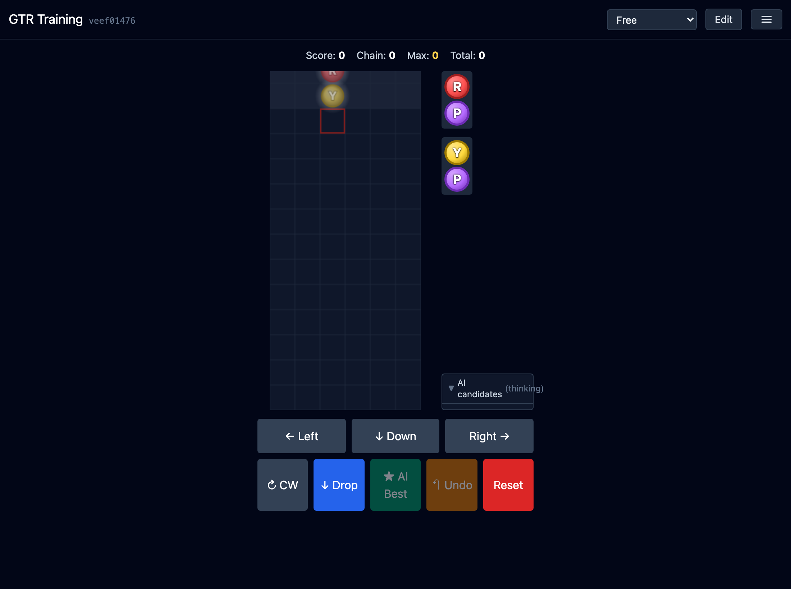

GTR Training Manual
A user guide for the puyo-style training simulator that pairs you with an AI advisor (ama) to drill GTR, staircase, and other classic chain templates.
What this app is for
GTR Training (repo name puyo-simulator) is a web app that lets you practice classic puyo-style chain templates such as GTR and Staircase, with a built-in AI advisor providing the best move and the top 5 candidates each turn.
- The AI is ama (MIT, by citrus610), bundled as WebAssembly (and as a native static library inside the Tauri build).
- Pure web: a PWA you can install for offline launch.
- Templates re-weight the AI to bias suggestions toward GTR or staircase shapes.
- Three play modes: free practice, score-vs-ama duel, and score attack.
Reading the screen

| Area | Purpose |
|---|---|
| Header | App name & build SHA · mode selector · Edit toggle · hamburger menu |
| Score row | Score (current chain points), Chain, Max, Total |
| Board | 6 × 12 with one ceiling row above (game-over zone). The red outline is the axis puyo's drop column. |
| NEXT queue | Two upcoming pairs to the right of the board. |
| AI candidates | The top 5 ama suggestions with eval %, each with a Go button. |
| Controls | ← / Down / → · CW · Drop · AI Best · Undo · Reset. Touch and keyboard both work. |
Controls
Keyboard
| Key | Action |
|---|---|
| ← / → | Move one column |
| ↓ | Soft drop one row |
| X | Rotate clockwise |
| Z | Rotate counter-clockwise |
| ↑ / Space | Commit (drop at the current column & rotation) |
| U or Ctrl/⌘ + Z | Undo one move |
Touch (mobile)
- Swipe left/right on the board → move
- Swipe down → soft drop
- Tap the board → rotate (CW / CCW depending on tap side)
- The on-screen buttons mirror every action above
On-screen buttons
- Drop (↓) — commit at the current column.
- ★ AI Best — instantly play ama's best move. Repeated taps make ama auto-play.
- Undo (↶) — step back one move (your side only during a match).
- Reset — reset the board and reseed. A confirm dialog will appear.
Game modes
The mode selector at the top-left switches between three modes.
1. Free
Untimed practice with AI candidates visible. The default mode for learning. Look at the candidates, pick a move, occasionally peek at AI Best, and Undo when something doesn't fit.
2. Score vs ama

Both sides play the same seed (identical NEXT queue) for a fixed number of turns (30 / 50 / 100). The higher cumulative score wins. AI candidates are hidden — you're competing on move selection alone.
- The Resign button (top-right of the score row) ends the match in your loss.
- After the match ends, save it from the menu — it lands in Saved matches for replay.
3. Score attack

Solo run, no opponent. You can submit the run to the score server and get a short URL that replays it (loaded by ?score=<id>).
Templates (Trainer)

- None — the default beam search (
buildpreset). - GTR — heavier weights on the GTR key/turn shape, biasing suggestions toward GTR builds.
- Staircase — prioritises the staircase chain layout.
Switching templates affects both the candidate list shown in Free mode and ama's own play in score-vs-ama matches.
Edit mode

Tap Edit in the header to enter edit mode. (If you're mid-match, you'll be asked to confirm exiting it first.)
- Pick a colour from R / P / B / Y at the bottom, then tap a cell to place it.
- ○ erases (returns to empty); ✕ places a garbage puyo.
- Tap the right-hand Current / NEXT / NEXT 2 cards to edit the current pair and the two upcoming ones.
- Apply commits, Cancel discards, Clear empties the board.
Menu & display preferences
- Ghost — show a faint preview of where the current pair will land.
- Ceiling — toggle the visual ceiling row (the game-over line).
- Template — AI weighting (see above).
- Language — switch the UI between Japanese / English / Chinese / Korean. This manual follows the same setting.
- Share — encode the current board into a URL.
- Saved matches — list of replays you previously saved.
- Manual — opens this manual in a new tab.
- Analyze — re-evaluate every move you played in Free or in a finished match. Returns AI match% and AI eval%.
Sharing, saving, analysis
Board share

Open the URL on another device to recreate the same board. Score and history aren't carried over.
Replay share
At the end of a score attack or match, Share replay encodes the seed plus your move list into a URL. You can also upload it to the score server to obtain a short ID URL (loaded back via ?score=<id>).
Saved matches

Saved matches store only seed + move list, so storage is very lightweight. During replay you can step turn-by-turn and rewatch chain animations.
Analyze
- AI match — % of moves that matched ama's best (moves played via the AI Best button are excluded).
- AI eval — average of your move's score vs ama's best, only counting moves that fell inside ama's top 5.
PWA / native app
The app is a PWA — Chrome & Safari let you "Add to Home Screen" for an installed-app feel and offline launches.
On macOS and Android there's also a Tauri native build that links ama as a C++ static library (via Rust FFI). This brings AI suggestions to under 200 ms p99 on Intel Mac.
Glossary
| Axis puyo | The pair member rotation pivots around. Marked with the red outline on the board. |
| Chain | A pop that drops puyos which then pop again — the engine repeats until nothing pops. |
| GTR | A canonical chain template (L-shaped key + folding-back column). |
| Staircase | A chain template where colours form a staircase from one side to the other. |
| Death / suffocation | Game-over from puyos reaching row 13. |
| Seed | RNG seed driving the NEXT queue. Sharing it reproduces the same sequence. |
| ama | The bundled AI by citrus610 (MIT). Beam search plus heuristics. |